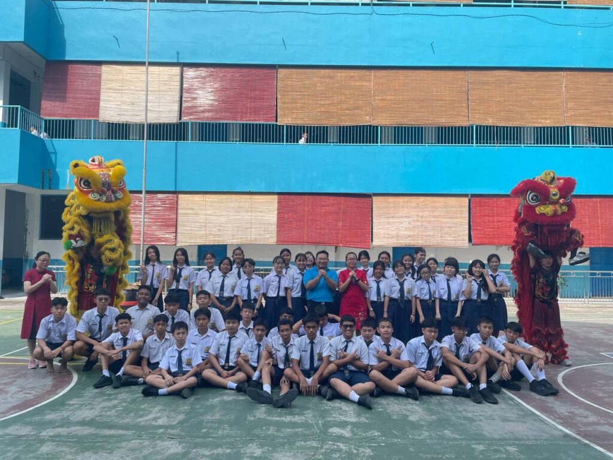
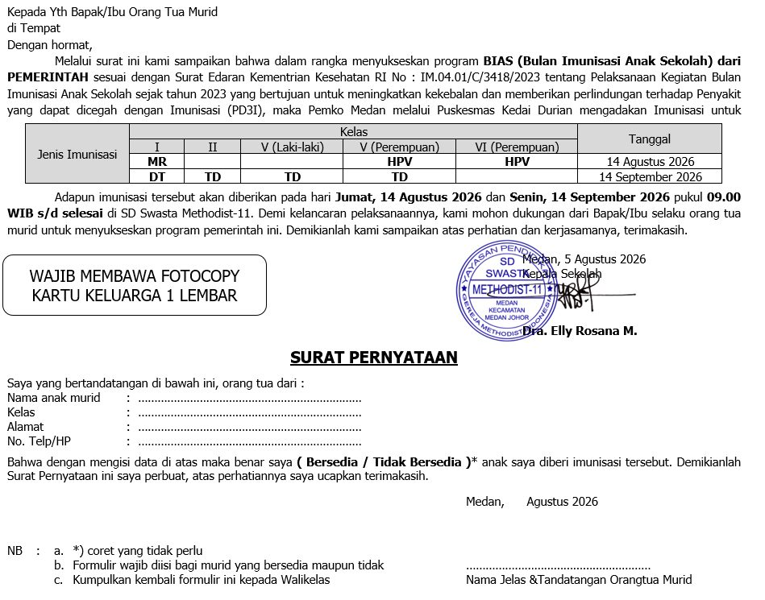

Tempat belajar,
bertumbuh, dan
berkarakter.
Bersama Methodist-11, tumbuhkan iman, pengetahuan, dan karakter anak dalam lingkungan belajar yang peduli.

Merayakan kebersamaan.Lihat kegiatan
Kenapa Harus Methodist-11?
Pendidikan yang memperhatikan pengetahuan, karakter, dan iman anak.
Uang Sekolah Terjangkau & Transparan
Di Methodist 11, biaya sekolah relatif terjangkau dibanding sekolah swasta lain dengan kualitas setara. Sekolah ini memberikan kesempatan yang adil bagi semua siswa.
Guru dan Lingkungan
Guru-guru yang berpengalaman dan peduli membantu siswa berkembang sesuai potensi mereka. Didukung dengan lingkungan belajar yang aman, tertib, dan positif.
Akal, Budi, dan Rohani
Methodist 11 tidak hanya menekankan prestasi akademik. Pendidikan di sini menegaskan akal budi dan rohani siswa, sehingga mereka tidak hanya cerdas secara intelektual, tetapi juga memiliki iman, moral, dan nilai hidup yang kuat.
Visi & Misi
Fondasi pendidikan kami
Visi
Membentuk Peserta Didik yang beriman, cerdas, berkarakter, dan berwawasan global.
Misi
- Menerapkan program keagamaan yang mampu membentuk peserta didik yang beriman kepada Allah, dan berakhlak mulia kepada sesama manusia.
- Melaksanakan pembelajaran berbasis literasi, dan numerasi untuk membentuk kecerdasan peserta didik.
- Menanamkan nilai-nilai Profil Pelajar Pancasila melalui kegiatan ekstrakurikuler.
- Mengintegrasikan teknologi informasi dan komunikasi dalam proses pembelajaran untuk membangun wawasan peserta didik.
Aktivitas & Fasilitas
Ruang untuk belajar dan berkembang. Pilih fasilitas untuk membaca keterangannya.
01Ruang belajar Full AC + LCD Infocus
Setiap ruang kelas dilengkapi pendingin ruangan (AC) dan proyektor LCD agar proses belajar mengajar tetap nyaman, sejuk, dan lebih interaktif.
02Lab Bahasa Full AC + LCD Infocus
Laboratorium bahasa ber-AC dengan perangkat LCD Infocus untuk mendukung pembelajaran bahasa yang lebih interaktif dan menyenangkan.
03Lab Komputer Full AC + LCD Infocus
Laboratorium komputer ber-AC yang dilengkapi sejumlah unit PC dan LCD Infocus untuk mengembangkan kemampuan digital siswa sejak dini.
04Lab Kimia / Biologi Full AC
Laboratorium IPA (Kimia/Biologi) ber-AC yang aman dan lengkap, siap mendukung praktikum sains siswa dengan bimbingan guru.
05Perpustakaan Full AC
Perpustakaan ber-AC dengan koleksi buku yang terus diperbarui untuk menumbuhkan budaya membaca dan literasi siswa.
06Aula Full AC
Aula ber-AC yang luas, digunakan untuk ibadah, rapat, pentas seni, serta berbagai kegiatan sekolah lainnya.
07Ruang Bermain TK
Ruang bermain khusus anak TK yang aman dan menyenangkan untuk mengembangkan kreativitas dan motorik anak.
08Alat Bermain Anak PG dan TK
Tersedia berbagai alat bermain edukatif untuk anak PG dan TK, baik di dalam maupun luar ruangan.
09Kolam Renang
Kolam renang sekolah untuk pembelajaran renang dan pengembangan keterampilan motorik siswa.
10Ruang Serba Guna
Ruang serbaguna yang fleksibel untuk berbagai kegiatan sekolah, mulai dari seminar hingga latihan ekstrakurikuler.
🏅 Sekolah yang Asik dan Sportif
Methodist-11 aktif dalam perlombaan baik tingkat kota maupun Nasional. Kami percaya setiap anak memiliki bakat yang perlu diarahkan, didukung, dan dirayakan.
Guru-Guru Hebat
Pendidik yang berpengalaman dan penuh dedikasi
Berkembang Bersama Pendidik Terbaik
Guru-guru di Methodist-11 tidak hanya mengajar, tetapi membimbing dengan teladan. Mereka membantu setiap siswa menemukan potensi terbaiknya di lingkungan yang aman dan positif.

Pengumuman
Informasi terbaru dari sekolah

Retreat Siswa-Siswi SD/SMP
Kegiatan Retreat (Pendidikan Karakter) di Manna Hill, Berastagi, 6–8 Januari 2027. Biaya Rp550.000 (disubsidi sekolah). Lihat rincian dan ketentuan pendaftaran.

Study Tour ke Rahmat Zoo & Park
Study tour murid kelas I-VI ke Rahmat Zoo & Park Perbaungan dilaksanakan Sabtu, 19 September 2026. Pembayaran paling lambat 11 September 2026 via wali kelas.

Imunisasi untuk Seluruh Siswa
Imunisasi (BIAS) seluruh siswa bekerjasama dengan Puskesmas Kedai Durian, Jumat 14 Agustus & Jumat 18 September 2026 pukul 09.00 WIB. Orang tua dimohon mengisi surat persetujuan.

Pemberian Obat Cacing
Pemberian obat cacing (albendazole) untuk seluruh siswa kelas 1-6 dilakukan oleh tim kesehatan sekolah. Anak diharapkan sarapan sebelum kegiatan.
Juara Kelas Semester Ganjil
Selamat kepada para juara kelas semester ganjil tahun ajaran 2026/2027. Pengumuman lengkap dapat dilihat di papan informasi sekolah.
Kegiatan
Apa saja yang sekolah lakukan

Kunjungan Edukatif Kebun Binatang
Field trip pengenalan satwa dan cinta lingkungan bersama siswa dan guru.

Perayaan Imlek
Kemeriahan perayaan Tahun Baru Imlek bersama seluruh siswa dan guru.

Peringatan HUT ke-80 Kemerdekaan RI
Upacara bendera dan lomba 17-an yang meriah bersama seluruh siswa dan guru. Dokumentasi lengkap tahun lalu ada di halaman kegiatan.

Ibadah Rutin Mingguan
Kegiatan ibadah rutin setiap minggu untuk membentuk karakter, iman, dan akhlak mulia siswa.

Kegiatan Harkdiknas 2024
Peringatan Hari Pendidikan Nasional 2024 bersama seluruh siswa dan guru.

Kunjungan Susu Milo
Kunjungan edukatif tentang susu sehat untuk seluruh siswa.
Galeri
Cerita sekolah dalam foto. Buka album untuk melihat dokumentasi lengkap.

Hubungi Sekolah
Kunjungi Methodist-11 — informasi kontak dan pendaftaran
Alamat📍 Jl. Berlian Sari III No.151 A, Kedai Durian, Kec. Medan Johor, Kota Medan, Sumatera Utara 20147
Telepon📞 +(016) 7880439
Jam Belajar Siswa07.00–12.15 WIB
Jam Operasional🕖 07.00–15.00 WIB (Senin–Sabtu)
Tanya pendaftaran via WhatsApp ↗Lokasi Kami
Jl. Berlian Sari III No.151 A, Kedai Durian, Kec. Medan Johor, Kota Medan, Sumatera Utara
📍 Buka rute ke sekolah → Petunjuk Arah (Google Maps)